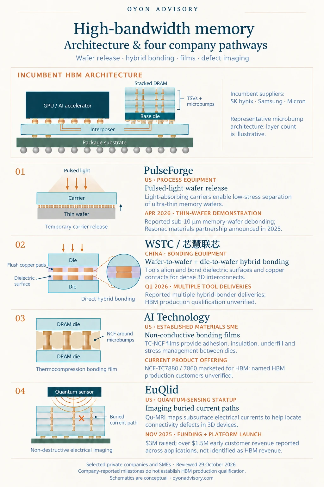

Back to Research & Perspectives
High-Bandwidth Memory: Architecture & Four Company Pathways
AI accelerators need fast access to large amounts of data. High-bandwidth memory (HBM) meets this demand by stacking DRAM dies vertically and placing the memory close to the processor.
The incumbent architecture
HBM combines stacked DRAM, through-silicon vias (TSVs), and a base/interface die. An interposer connects the memory stacks to the GPU or AI accelerator through short, wide electrical links. HBM4 extends this architecture with a 2,048-bit interface; Micron reports bandwidth exceeding 2.8 TB/s per stack. [1]
Bonding and supporting materials remain important differentiators. Samsung uses advanced thermocompression bonding with non-conductive film (TC-NCF), while SK hynix develops its MR-MUF—mass reflow and molded underfill—platform. Hybrid bonding offers a further scaling path, although its adoption timing varies by product roadmap. It should not be treated as a universal requirement for current HBM4. [2] [3] [4]


Four company pathways
The selected companies span startups and established private suppliers, addressing specific challenges around the HBM stack.
1. PulseForge | US — Pulsed-light wafer release
PulseForge uses intense light pulses and light-absorbing carriers to separate fragile, thin wafers from temporary supports. In April 2026, it reported memory-wafer debonding below 10 µm, working with an unnamed Korean memory manufacturer. Its 2025 partnership with Japan’s Resonac combines equipment and compatible temporary-bonding materials. These are development milestones; named HBM production acceptance remains undisclosed. [5] [6]
2. WSTC / 芯慧联芯 | China — Hybrid-bonding equipment
WSTC develops wafer-to-wafer and die-to-wafer hybrid-bonding equipment, supporting dense 3D interconnections through directly bonded copper contacts and dielectric surfaces. In April 2026, it reported multiple hybrid-bonder deliveries during Q1; the customers and HBM production applications were not disclosed. [7]
A June 2026 shareholder announcement disclosed a proposed RMB50 million investment, with provision for another RMB150 million from related investors. These amounts represent proposed financing, rather than a verified completed round. [8]
3. AI Technology | US — Non-conductive bonding films
An established materials SME, AI Technology markets NCF-TC7880 and NCF-TC7860 for HBM and advanced packaging. Its films provide adhesion, electrical insulation, underfill, and stress management during thermocompression bonding. The company emphasizes polymer formulations that control thermal expansion without fillers. The disclosed evidence is an HBM-targeted product offering; named HBM production qualification remains unverified. [9]
4. EuQlid | US — Imaging buried electrical defects
EuQlid’s Qu-MRI platform uses diamond-based quantum sensing to map buried electrical currents, targeting applications including HBM interconnect and stacking-error localization. In November 2025, it disclosed $3 million raised, led by QDNL Participations with Quantonation participating, and over $1.5 million in early customer revenue. That revenue spans applications and was not identified as HBM revenue. [10]
The opportunity
These pathways highlight opportunities in making fragile wafers easier to handle, stacked connections more reliable, and buried defects easier to locate. Their commercial value will depend on measurable improvements in customer yield, reliability, throughput, and cost.
Selected public sources
- Micron — HBM4 architecture and specifications
- Samsung — HBM and advanced TC-NCF
- SK hynix — Evolutionary memory and advanced MR-MUF
- SK hynix-hosted expert note — Hybrid bonding, 25 August 2026
- PulseForge — Sub-10 µm memory-wafer demonstration, 13 April 2026
- Resonac — PulseForge partnership, 27 June 2025
- WSTC — Multiple hybrid-bonder deliveries, 3 April 2026
- Bai Ao Chemical shareholder announcement — Proposed investment in 芯慧联芯, 10 June 2026
- AI Technology — HBM-targeted TC-NCF films
- EuQlid company release — Qu-MRI, funding and early revenue, 4 November 2025